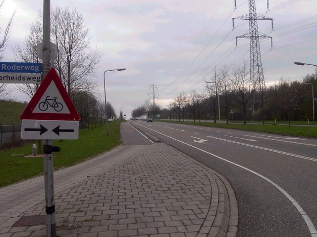
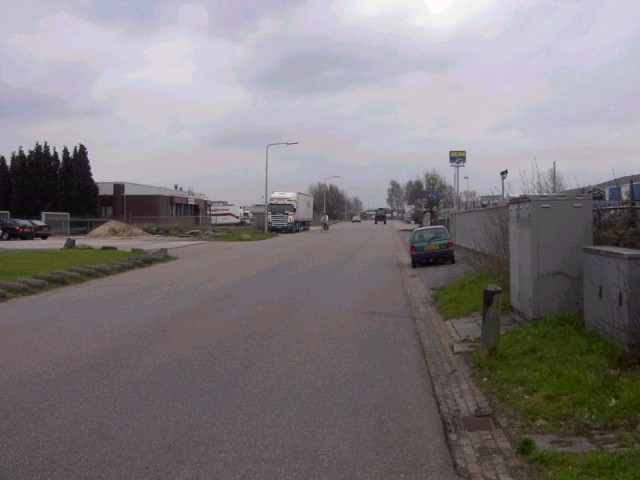
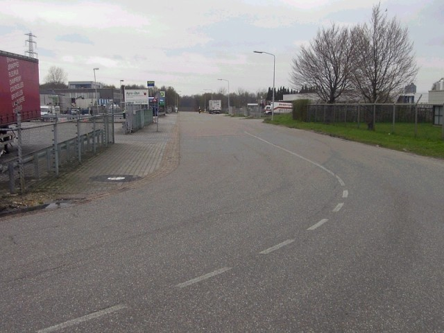
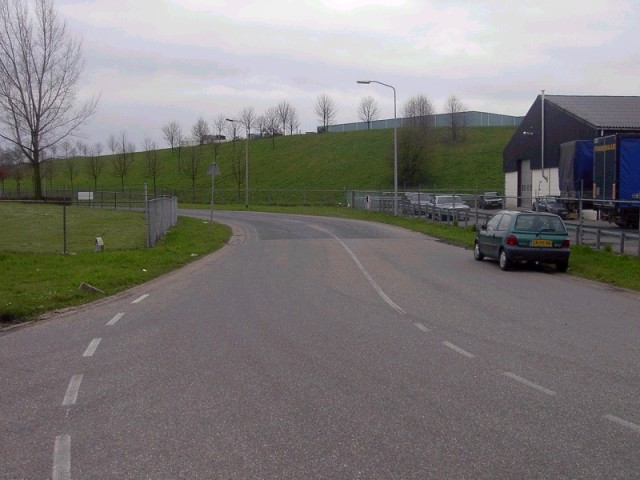

Circuit 'De Beitel', Heerlen - Oude Roderweg
|| Contents | Oude Roderweg | Nijverheidsweg | Sourethweg || Home ||
Click on the hyperlinks above to view photographs of that
section.
The numbers and arrows on the map represent the location and direction of where
each of the photographs were taken.

01 - On the corner of the 'Oude Roderweg' and the 'Imstenraderweg'

02 - On the corner of the 'Oude Roderweg' and the 'Imstenraderweg', in the direction of
the 'Nijverheidsweg'

03 - Still on the corner of the 'Oude Roderweg' and the 'Imstenraderweg', this time
looking back at the corner

04 - On the corner of the 'Oude Roderweg' and the 'Nijverheidsweg', in the direction of
the 'Imstenraderweg'

05 - In the same corner, in the direction of the 'Nijverheidsweg'
Photographs & Text ©Roelard Smit. Reproduced here with kind permission.